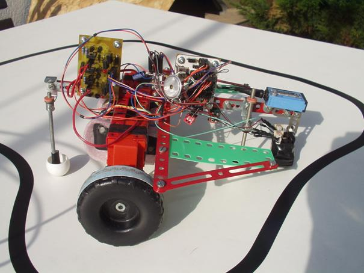
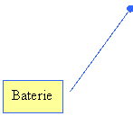
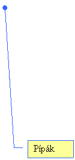
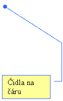
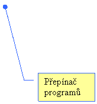
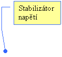
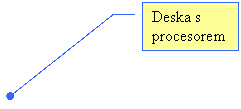
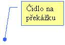
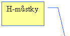
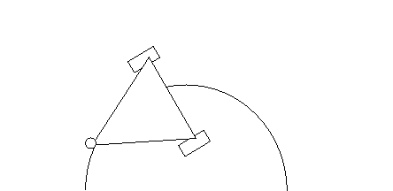

Robot Merkur
Jakub Kákona
Robot Merkur byl postaven jako soutěžní robot na soutěž ISTROBOT 2005. Název robota vnikl ze jména nejrychlejší planety Sluneční soustavy Merkura. V římské mytologii byl Merkur považován za ochránce cestovatelů, obchodníků, ale i zlodějů.

Robot Merkur
Obrázek ukazuje robot Merkur s popiskami.
       
Řídící elektronika
Pro snímání černé čáry jsou použita UV čidla z inkoustových tiskáren (původně určená pro měření kvality papíru), čidlo na překážku (předpokládá se cihla) je průmyslový LED senzor určený na počítání výrobků na běžícím pásu.
Čidla jsou přímo připojena na mikroprocesor PIC16F88, ten řídí pohyb robota pomocí H můstkového regulátoru napojeného na stejnosměrné motory a převodovku, jeho zapojení je převzato z konstrukce čínských autíček na dálkové ovládání.
Mechanická konstrukce
Kostra robota je postavena z několika dílů stavebnice MERKUR, ke kostře je připevněna řídící elektronika ze stavebnice MLAB, dobrá elektrická vodivost kovové kostry je využita k rozvodu záporného pólu napájecí baterie, k pohonu jsou i přes velké potíže se spolehlivostí použity originální merkurácké motory (během vývoje bylo třeba každý motor několikrát rozebrat a přilepit utržený pastorek zpět na motor).
Pro správnou dynamičnost pohybu robota bylo třeba zjistit správnou vzdálenost mezi senzory na snímání čáry a osou kol, tato vzdálenost odpovídá dvojnásobku předpokládaného středního rádiusu zatáčky na trati. Důležitý je také rozchod kol, tady platí že čím je větší, tím méně musí robot v zatáčce zpomalovat, zároveň je ale třeba brát v úvahu rozměry tunelu umístěného na trati.

Popis programu
Program pracuje na následujícím principu. Pokud robot vidí čáru, zaznamená si, pod kterým čidlem ji vidí a jede rovně. Pokud čáru nevidí, tak jede tam, kde ji viděl naposled. Pokud zatáčí již příliš dlouho, znamená to, že čáru ztratil. Potom zacouvá, popojede rovně vpřed a snaží se čáru nalézt pomocí velmi mazané rutiny „cikcak“.
Objetí překážky je založeno na předpokladu, že čára za překážkou pokračuje ve stejném směru jako před ní. Robot po nárazu na překážku couvne a vycentruje se na čáru. Potom překážku slepě objede. Po znovunalezení čáry se přepokládá, že čáru přejel a otočí se ve směru objíždění, aby se znovu vycentroval na čáru.
Propozície kategórie Stopár
Súťažná úloha
Zostrojiť elektronicky riadeného autonómneho mobilného robota, ktorý prejde po určenej dráhe a v časovom limite do cieľa. Smer a trasa je daná namaľovaným tmavým pruhom, na dráhe sú umiestnené rozličné prekážky.
Toto zadanie prestavuje reálnu úlohu napríklad pre automatické skladové manipulátory a podobne.
Dráha
Podklad dráhy bude svetlý (biely) s tmavou (čiernou) vodiacou čiarou šírky 15+/-1 mm. Celková dĺžka dráhy nepresiahne 20 m. Materiál bude papier, drevo, linoleum alebo podobné materiály.
Najmenší polomer oblúkov na trati bude 10 cm. Celkové prevýšenie nepresiahne 3 cm, maximálne stúpanie a klesanie je 5%. Na dráhe, podobne ako v reálnom svete, sa môžu vyskytovať náhodné prekážky (prerušená vodiaca čiara, prekážka na vodiacej čiare, zmena osvetlenia čiary a iné).
Úlohou robota nie je nájsť správnu cestu (nebudú žiadne križovatky a odbočky), ale výhradne sledovať namaľovanú čiaru. Na dráhe sa môže vyskytnúť aj tunel s minimálnym prierezom 25x25 cm. Dráha sa počas súťaže nemení, takže robot sa môže učiť a napr. rovné úseky pri ďalšej jazde prechádzať rýchlejšie.
Robot vyštartuje z pomysleného kruhu o polomere 30 cm (štart), za ktorým nasleduje asi 50 cm dlhý priamy úsek, na ktorom musí nájsť stopu a nastaviť sa na ňu. Za týmto úsekom sa nachádza pomyslená štartovacia čiara, po prerušení svetelného lúča (10 mm nad povrchom dráhy) ľubovoľnou časťou robota sa začne merať čas. Dráha bude uzavretá a v priestore štartu (a teda aj cieľa) bude cez čiernu čiaru nalepený kolmý pásik dlhý cca 10cm, ktorý bude znamenať začiatok a koniec dráhy. Súťažiaci, ktorým by pásik vadil, môžu robota na dráhu postaviť až za ním. Tak môžu roboty lepšie využiť znalosti získané z predošlých kôl.
Časomiera sa zastaví po prerušení podobného lúča na konci dráhy.
Činnosť robota
Po umiestnení robota do štartovacieho kruhu a jeho zapnutí súťažiaci nesmie do jeho činnosti nijakým spôsobom zasahovať. Robot musí byť riadený výlučne vstavanými elektronickými obvodmi.
Po prekročení štartovacej čiary robot nesmie opustiť dráhu vyznačenú tmavou čiarou s výnimkou obchádzania prekážky. Pri pohybe nesmie zanechávať žiadne stopy a značky. Na dráhe nesmie ostať ani žiadna jeho súčasť.
Pri poškodení súťažnej dráhy je robot diskvalifikovaný.
Rozmery a veľkosť robota
Rozmer robota nesmie v žiadnom smere presiahnuť 25cm. Uvedomte si aj obmedzenia dané tunelmi a polomermi oblúkov na dráhe.
Minimálne rozmery nie sú obmedzené. Hmotnosť nie je obmedzená.
Konštrukcia a materiály
Na konštrukciu sa nekladú žiadne obmedzenia. Jedinou požiadavkou je to, aby robot bol výrobkom súťažiaceho (súťažiacich). To nevylučuje komerčné stavebnice (LEGO, Fischertechnik), iba hotové výrobky.
Senzorika
Nie sú kladené žiadne obmedzenia na typ, počet a rozmery použitých snímačov, ak neporušujú iné pravidlá.
Súťažiaci nesmú použiť žiadne vonkajšie pomôcky na zlepšenie navigácie (nálepky, značky, zrkadielka,...).
Elektronika
Žiadna časť robota nesmie pracovať s väčším napätím ako je 24V. Celková spotreba by nemala byť viac ako 20A. Výnimky z tohto pravidla schvaľuje porota. Všetky riadiace obvody musia byť súčasťou robota, nie je možné riadiť jeho pohyb napríklad z externého PC pripojeného či už káblom, alebo bezdrôtovo.
Na použité elektronické súčiastky nie je žiadne obmedzenie.
Zdroje energie sú problém súťažiacich.
Poradie účastníkov a priebeh súťaže
Poradie súťažiacich bude vylosované tesne pred súťažou. Účastníci musia absolvovať predpísanú dráhu v poradí určenom losovaním. Každý súťažiaci robot môže prejsť dráhu trikrát vo vylosovanom poradí. Čas medzi pokusmi môže účastník využiť na ľubovoľné opravy a úpravy. Ak sa však nedostaví do 1 minúty po výzve na štart, stráca právo absolvovať pokus. V prípade, že sa prihlási veľa súťažiacich, porota môže znížiť počet pokusov, prípadne vyhlásiť kvalifikačné kolo.
Časové limity
Na prejdenie dráhy je stanovený časový limit 5 minút. Po piatich minútach sa meranie času zastaví a pokus sa zruší. Aj napriek tomuto handicapu však nie je diskvalifikovaný. Zastavenie merania času nemá nijaký vplyv na ostatné pokusy.
Hodnotenie a ceny
Každý prihlásený robot, ktorý prejde stanovenú dráhu, dostane diplom. Víťazom sa stane robot s najnižším dosiahnutým časom zo všetkých pokusov. Okrem toho môže porota udeliť cenu za najlepšiu konštrukciu a najelegantnejšiu konštrukciu (kapotáž).
Diskvalifikácia
Vo všeobecnosti platí, že pri každom porušení pravidiel je robot zo súťaže vylúčený. To platí najmä v týchto situáciach:
- nebezpečné správanie, ohrozenie bezpečnosti,
- poškodenie dráhy,
- ak sa robot počas jazdy rozpadne.
Bezpečnosť
Tri zákony robotiky:
- Robot nesmie ublížiť človeku alebo svojou nečinnosťou dopustiť, aby bolo človeku ublížené.
- Robot musí poslúchnuť príkaz človeka, s výnimkou prípadov, keď je taký príkaz v rozpore s prvým zákonom.
- Robot musí chrániť sám seba pred zničením, s výnimkou prípadov, keď je to v rozpore s prvým a druhým zákonom.
Isaac Asimov: The Complete Robot, Nightfall Inc., 1982.
V prípade, že zariadenie nebude spĺňať základné bezpečnostné predpisy, porota ho nesmie pripustiť k súťaži a nesmie dovoliť jeho prevádzkovanie.
Každý robot, ktorý by mohol ohroziť účastníkov, divákov, alebo zariadenie, bude vypnutý.
Súťažná dráha nemá mantinely. Okolo čiary je na každej strane bezpečný pás široký 26 cm, ale napriek tomu sa odporúča vo vlastnom záujme robota vybaviť bezpečnostným zariadením proti pádu zo stola.
Klimatické podmienky
Súťaž bude prebiehať v bežných klimatických podmienkach (T = 270 - 310 K, p = 90 - 120 kPa, 0 - 90% RH).
Skutočnú úroveň osvetlenia scény nie je možné vopred určiť. Pred súťažou bude vyhradený čas, ktorý môžu súťažiaci využiť na optimálne nastavenie citlivosti snímačov. Organizátor nemôže zaručiť, že diváci nebudú vrhať na dráhu tiene.
Upozornenie: Konštruktéri si musia uvedomiť, že moderné filmové a fotografické prístroje používajú zábleskové zariadenia a infračervené vysielače na zaostrovanie. Pretože priebeh súťaže bude zaznamenávaný, pri konštrukcii treba počítať aj s takýmito poruchovými signálmi.
Dokumentácia
Každý súťažiaci musí odovzdať pred súťažou dokumentáciu popisujúcu
elektroniku, konštrukciu a riadiaci algoritmus. Najlepšia forma je
html, organizátor poskytne priestor na jej uverejnenie na
svojom serveri.
Porota
Nad priebehom súťaže a dodržiavaním pravidiel bdie porota.
Porota je najmenej trojčlenná, skladá sa zo zástupcov fakulty, študentov a sponzorov.
Výroky poroty sú záväzné vo všetkých sporných bodoch i v otázkach výkladu pravidiel.
Kedy a kde?
Súťaž bude prebiehať v priestoroch Fakulty elektrotechniky a informatiky na Ilkovičovej 3 v Bratislave 27. apríla 2005. Účastníci budú mať možnosť otestovať dráhu (pravdaže nie jej súťažný tvar) v stanovených termínoch a deň pred súťažou.
Registrácia a prihlášky
Súťaže sa môžu zúčastniť jednotlivci a tímy (max. 5-členné) bez ohľadu na vek či zamestnanie.